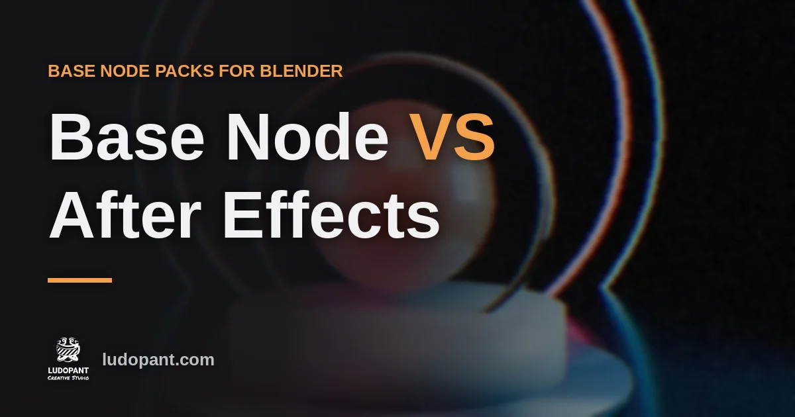

Products › Base Node Packs › VS › After Effects
Base Node VS After Effects

Adobe After Effects, by Adobe. A layer-based motion graphics and visual effects application, sold by Creative Cloud subscription.[1,2]
Base Node is a text language for Blender's node trees, with a free add-on and paid packs of tested node groups. After Effects stacks layers on a timeline; Base Node builds node graphs in Blender. Motion Design 2D makes text animators, 2D particles and echoes in Geometry Nodes, where a simulation zone keeps the frames before. Motion Compositing adds wipes, dissolves and stylize effects to Blender's compositor.
Of the 7 capabilities below, Base Node covers 5, covers 1 in part and does not cover 1. The After Effects side of each row was checked on Adobe's pages on 2026-11-20; the numbers link to them.
What After Effects does, and how Base Node does it
| What After Effects does | After Effects | Base Node + pack | Status |
|---|---|---|---|
| The project as text | Projects are binary .aep files, or XML copies in .aepx files.[3] | Node trees are .bn text, read and written back by the add-on. | Covered |
| Wipes and dissolves | Transition effects include Linear Wipe, Radial Wipe, Iris Wipe, Gradient Wipe, Block Dissolve, Venetian Blinds and Card Wipe.[4] | Linear, radial, clock, iris and gradient wipes, cross dissolve, dissolve by noise cells, dip to a colour and push, in the compositor. No venetian blinds or card wipe.
| Covered |
| Stylize effects | Stylize effects include Posterize, Glow, Mosaic, Find Edges and CC Vignette. We found no native halftone or scan-lines effect.[5] | Posterize, halftone and colour halftone, scanlines, chroma offset, a video tape look, glitch blocks, neon outline, vignette and chromatic aberration.
| Covered |
| Echo and trails | The Echo effect combines a layer's frames from earlier or later times, with a count, a decay and a blend mode.[6] | Echoes of a moving geometry, fading by a decay and tinted, and motion trails through where each point went. On geometry only, not on footage.
| Partial |
| Text animators | Text animators use range selectors by characters, words or lines, with a Randomize Order option.[7] | Text as one instance per character, revealed by character, word or line, forward, backward or in a seeded random order; offset, turn, scale and fade; typewriter; text on a path.
| Covered |
| 2D particles | CC Particle World and CC Particle Systems II are built in. Trapcode Particular is a separate Maxon plug-in.[8,9] | Emitters (point, line, circle, any shape or text outline), speed and spread, gravity, drag and turbulence, a lifetime, drawn as sprites that fade and grow; seeded.
| Covered |
| Roto and tracking | Roto Brush separates a subject from its background; the 3D Camera Tracker solves camera motion from footage.[10,11] | None. Blender's own Movie Clip editor tracks; the packs add nothing there. | Not covered |
Where After Effects is ahead
- A timeline with keyframes and a Graph Editor for values and speed.[12]
- Roto Brush carries a subject's matte through a shot.[10]
- The 3D Camera Tracker attaches text and solids to tracked points of footage.[11]
- Expressions link any property to others with JavaScript run on every frame.[13]
- Motion Graphics templates with their own controls go to Premiere Pro.[14]
- A large ecosystem of third-party plug-ins, such as Trapcode Particular.[9]
When to choose which
Choose After Effects when
You cut, track and finish motion work on a timeline: keyframes in a graph editor, Roto Brush, camera tracking, expressions, templates for Premiere Pro and many plug-ins.
Choose Base Node when
Your motion work is rendered in Blender and you want text animators, particles, transitions and stylize effects there, as node groups you can read and reuse from shot to shot.
The packs
- Motion Design 2D2D particles, text animators and time echoes for motion design in Geometry Nodes.
- Motion CompositingTransitions, wipes and stylize effects for motion design in the Blender compositor.
Sources
- https://www.adobe.com/products/aftereffects/free-trial-download.html
- https://helpx.adobe.com/after-effects/faq.html
- https://helpx.adobe.com/after-effects/using/projects.html
- https://helpx.adobe.com/after-effects/using/transition-effects.html
- https://helpx.adobe.com/after-effects/desktop/apply-effects-and-animation-presets/list-of-effects/stylize-effects.html
- https://helpx.adobe.com/after-effects/using/time-effects.html
- https://helpx.adobe.com/after-effects/using/animating-text.html
- https://helpx.adobe.com/after-effects/desktop/apply-effects-and-animation-presets/list-of-effects/simulation-effects.html
- https://www.maxon.net/en/product-detail/red-giant/particles-and-3d/trapcode-particular
- https://helpx.adobe.com/after-effects/desktop/roto-brush-and-refine-matte/roto-brush/roto-brush-refine-matte.html
- https://helpx.adobe.com/after-effects/using/tracking-3d-camera-movement.html
- https://helpx.adobe.com/after-effects/desktop/animate-in-after-effects/animation-basics/animation-basics.html
- https://helpx.adobe.com/after-effects/using/expression-basics.html
- https://helpx.adobe.com/after-effects/desktop/motion-graphics/work-with-motion-graphics-templates/creating-motion-graphics-templates.html
Adobe After Effects is a trademark of Adobe, or of its owner. Other product names are trademarks of their owners. Ludopant and Base Node are not affiliated with or endorsed by them; the names are used only to compare. All comparisons.